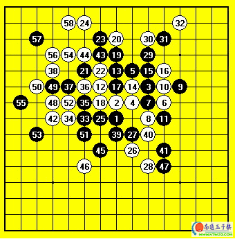

ORC中韩对抗赛对局对RELY1[图]
#1 ORC中韩对抗赛对局对RELY1[图] 作者：有志青年 发表时间：2007-3-18 13:55:17

黑：RELY1
白：CHINARENJU
白胜
中韩对抗赛是小朱联系的我。在以往ORC对局的印象中韩国好象只有BESTMAN可堪一战，所以对这个比赛信心还是很大的。赛前原定我是先手第二台，因为米兰突然想起一个变化想用用，就把我换成了第三台后手。这样更开心了，因为对我们来说一般都是喜欢坐后手的。
对手开局开出平衡的梳星，我没有提出交换。黑5的走法让我想到了实战9的下法，回忆了下感觉白优势很大的。果然对手走出了这个9.白10最强，11后我走出了这个12.在这个黑5变化中黑9走黑17的位置这个点是白必胜的。而在9走这里的变化中白12优势依然很大。实战的黑下法是黑最好的交换了。可以看出对手还是有一定计算力的。实战到25交换完毕，白取得局部的先手，而且黑没有什么好的棋型。26控制黑可能出现的反击并拓展棋型。27后我进入长考，这里面临的问题是继续强攻还是控制起来下。仔细看过上面黑可能出现的连接后。我做出了实战28的选择。黑如果跟过来的话白在局部不管如何进攻先手总可以保持住。而且为将来在左下进攻做出准备，黑直接VCT这里也没有。如果黑搞对攻的话白可以先进行防守，把先手给黑，而黑看起来也没什么特别好的进攻点。当黑进攻结束后也就是我取胜的时候。
29开始黑突然下出大失水准的棋。29-39的交换完全没有必要，不光把自己的材料消耗干净而且给白带出了很多棋。39后白右上就出现了很强的进攻棋型。40利用先手把这里定型。42开始借上面的棋向左下过渡。43？又是一手不知所谓的错误，给我带出了44这个局部强点。43可说全盘的败招。45看出上方直接防已经不太现实了，开始采用牵制的走法，不过黑这里并没有后续手段。46简单的盖一手就封死黑出棋的可能，而且继续在左下保持攻击态势。这个时候黑大势已去。47可能期待我进攻中出现错误吧。不过这种简单的VCT一般是不会出现什么失误的，48-58简单VCT。取胜后没感到什么兴奋，因为这盘棋对手下的完全不知所谓。中盘连出弱手。和开局阶段的样子好象盼若两人。我取胜的时候中方已经2：0了。这样已经是3：0大分取胜了。而且看小朱和曹东的局面也都不错。没想到后来会因为ORC的BUG丢了两分。
这个是04写的棋评.很好玩的是网络中比完韩国棋手不服气..特意在北京来了次现实中的中韩对抗.结果差距更明显中国12:4取胜..不过可惜的是我唯一输的一盘就是输给了RELY~算是给这个韩国小伙子复仇了一把
#2 Re:ORC中韩对抗赛对局对RELY1[图] 作者：越狱行辕 发表时间：2008-6-28 11:12:44
这个图没有了
［ 有志青年 于 2008-6-28 11:56:25 时奖励此帖[金币加 20 威望加1］已修复
#3 Re:ORC中韩对抗赛对局对RELY1[图] 作者：潇洒 发表时间：2008-6-28 14:14:40
有意思，山口在去年世锦赛也考吴镝这个变化
#4 Re:ORC中韩对抗赛对局对RELY1[图] 作者：百医天使 发表时间：2008-6-28 20:52:04
=======上图对应的爱五子棋谱代码如下，以便你拆解：========
h8h9j10i9i11k9j9j8l10k10k8g10h11i10j11k11h10g9h12h13f11g11g13f14j12j13k13l14g8i6i7j5k6k4l3j4l5l6m4j7j6k5i3j1h4i5l2e8g5j2j3m5k7k3l4l1k1e7e9d7g7g6f9f7h5d9c10d6d8h6c7b6f8e6f6d5
======================================================是的，前面差不多，44手太妙了，大鱼的确强